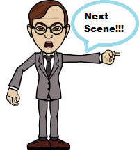
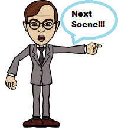

"It was the year 1994, when this is still a small company, when we had Eden. Eden was a big name in the company; he's the best employee at that time. He's intelligent, he's kind, and he's popular. Heck! He's always chosen as the employee of the month. But in a tragic accident, Eden died. Everyone was shocked, crying, and refusing to believe the sad news. It was the Developer's Department that was always working close with Eden so they have decided to carry on Eden's name even though that person is already dead. They put his name in the projects, in the documents as well as credits on a program like he was still alive and working for this company. Then the company grew, it became famous. But everybody... Everyone forgot about Eden. I guess Eden's spirit didn't like that. That was the beginning of the death of the employees. A chain of death. One by one the department's employees die. Death is instant and inevitable." Lucas continued his story "There is a sign when Eden's spirit is coming. When there will be again a series of deaths for the Developers Department." "What is it? Tell me!" speaks Daniel.
 
